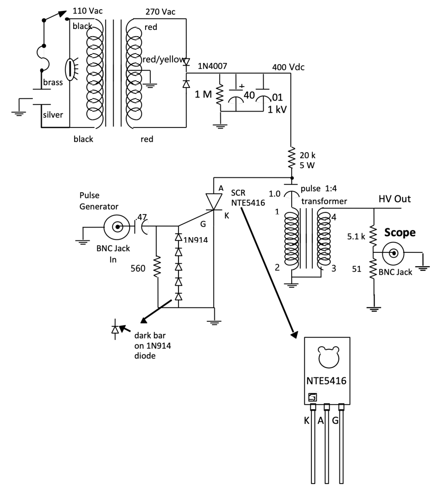

Overview
A nitrogen laser fires when a high-voltage discharge passes through nitrogen gas, producing nanosecond pulses at 337.1 nm. The system has three cascaded stages: a pulse generator, a pulse amplifier, and a thyratron discharge chassis.
I built and tested the middle stage, the pulse amplifier, which turns a low-voltage timer trigger into a ~1.6 kV fast-rise pulse that fires the thyratron.
Highlights
